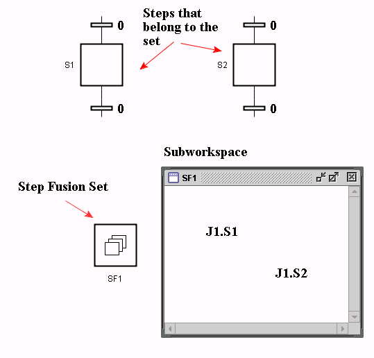

Show/Hide Body
Toggle the visibility of the subworkspace.
Edit
Opens a dialog for editing the Step Fusion Set properties.

Abortive?: Selects if the Step Fusion Set is Non-abortive or Abortive. (default: unchecked)

A step fusion set makes it possible to have steps with multiple views. Each step that belongs to a step fusion set constitutes one view of the same conceptual step. When one of the steps in the set become active, all the steps in the set are activated, and when one of the steps is deactivated, all are deactivated. The steps that should belong to the same set are specified by Text objects on the subworkspace of the step fusion set. Global references must be used. Step fusion sets may contain steps, macro steps, and procedure steps. Neither the step fusion set itself nor any of its views may be contained within a procedure. In principle it should be possible for a step to be a member of multiple step fusion sets, although this has not been tested.
A step fusion set may be non-abortive or abortive.
In a non-abortive fusion set, all the transitions connected to the output of any of the step fusion set views must be enabled in order for one of the transitions to be enabled. When an enabled transition is fired, all the steps in the set are deactivated and their exit actions are executed. The different steps of a non-abortive fusion set behave as if they all are connected in parallel.
In an abortive fusion set, a transition connected to the output of one of the steps in the set is enabled independently of the status of the other steps in the set. When an enabled transition is fired, the step connected to the transition is terminated in the normal way and its exit actions are executed. The other steps in the fusion set are aborted and their abortive actions are executed.
Show/Hide Body
Toggle the visibility of the subworkspace.
Edit
Opens a dialog for editing the Step Fusion Set properties.
Abortive?: Selects if the Step Fusion Set is Non-abortive or Abortive. (default: unchecked)